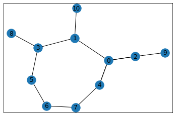

Degree Sequence¶
import networkx as nx
%matplotlib inline
z = [5, 3, 3, 3, 3, 2, 2, 2, 1, 1, 1]
#print(nx.is_valid_degree_sequence(z))
G = nx.configuration_model(z) # configuration model
degree_sequence = list(d for n, d in G.degree()) # degree sequence
degree_sequence
[5, 3, 3, 3, 3, 2, 2, 2, 1, 1, 1]
nx.draw_networkx(G)
